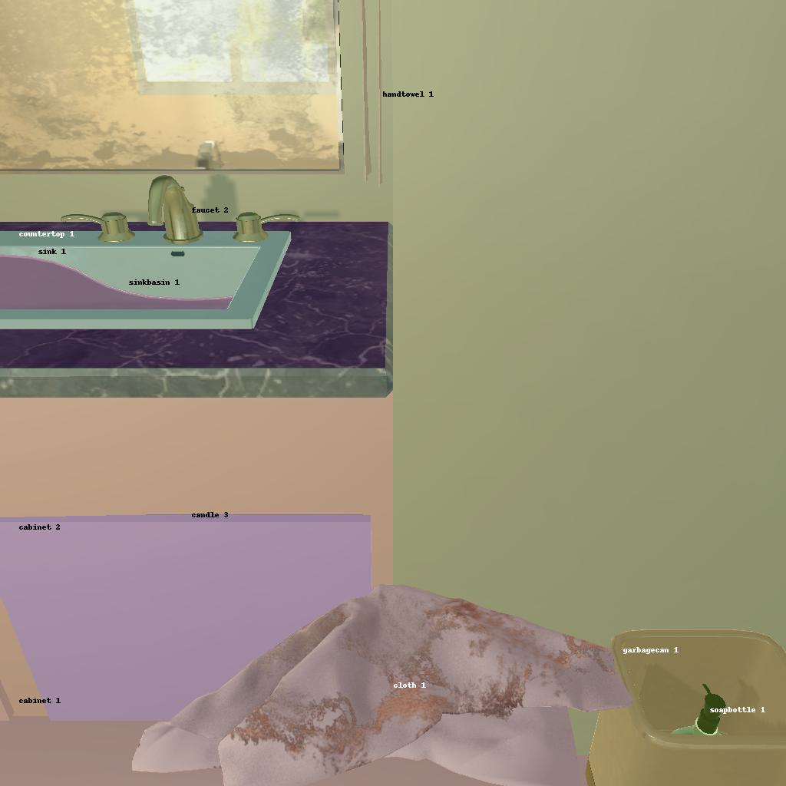

---------------------------------------------------------task: 11---------------------------------------------------------
--------------------------------------------------------------------------------------------------------------------------------------------------------------------
--------------------------------------------------------------------------------------------------------------------------------------------------------------------
Step:--------------------------------------------------------------------------9-------------------------------------------------------------------------------
----------------------------------------
VLM Prompt:
Image1:
Image2:
Image3:
**Instruction**
1. Analyze the provided image to identify all visible household objects, focusing on those relevant to the task description "clean some soapbar and put it in bathtubbasin."
2. Use the analysis of the image and the task hint "The agent must find an object of the desired type, pick it up, go to a sink or a basin, clean the object with a sink or basin, and then find the correct location to place it and put it down there. The agent does not need to use soap bottle or faucet to clean the object, and the agent just needs to do action that is "clean the object with the sink or sink basin"." to answer the question: what is the most reasonable action in the choices for the task description "clean some soapbar and put it in bathtubbasin"?
4. Decide and write the answer using the template: The answer is: (i): , where i is the real number. If there is no desired object in the image, search every place based on **Initial Observation** to find the object. And if no one is exactly correct, choose a similar answer.
**Initial Observation**
You are in the middle of a room. Looking quickly around you, you can see bathtub (1), bathtubbasin (1), toilet (1), cabinet (1-2), countertop (1), sink (1), sinkbasin (1), garbagecan (1)
**Answer Choices**
(1): go to bathtub 1
(2): go to bathtubbasin 1
(3): go to toilet 1
(4): go to countertop 1
(5): go to sink 1
(6): go to sinkbasin 1
(7): go to garbagecan 1
(8): close cabinet 1
(9): put cloth 1 in/on cabinet 1
(10): examine cloth 1
(11): examine cabinet 1
**Answer**
Let's think step by step by following the instructions.
----------------------------------------
----------------------------------------
Original Response:
First, we need to find a soapbar. Although the images are labeled with various household items, none of them are labeled as "soapbar." However, in Image 1 and Image 2, there's an object labeled "soapbottle 1," which is not the desired object, but it's possible that the soapbar is nearby. Since no soapbar is visible, we should search every place based on the initial observation to find it.
Once we have the soapbar, the agent must clean it. According to the task hint, the agent does not need to use a soap bottle or faucet to clean the object, they just need to perform an action that is "clean the object with the sink or sink basin." Therefore, the agent should go to the sink or sink basin.
After cleaning the soapbar, the final step is to put it in the bathtub basin. Hence, the most reasonable action would be to first find the soapbar, then go to the sink or sink basin to clean it, and then go to the bathtub basin to place it.
Since the images do not show a soapbar and the initial observation lists a "bathtubbasin," the agent should first go to the sink or sink basin to clean the object (once found), and then go to the bathtub basin to complete the task.
The answer is: (6): go to sinkbasin 1
----------------------------------------
----------------------------------------
>>> Refine Original VLM Response and Get Pure Action: go to sinkbasin 1
----------------------------------------
-----------------------------------------------------------------
Running time: 12.260243654251099 seconds
Total Money: 6.626000000000001
-----------------------------------------------------------------
-----------------------------------------------------------------
Text Observation:You arrive at loc 6. On the sinkbasin 1, you see a faucet 1, and a faucet 2.
-----------------------------------------------------------------
UNSUCCEED